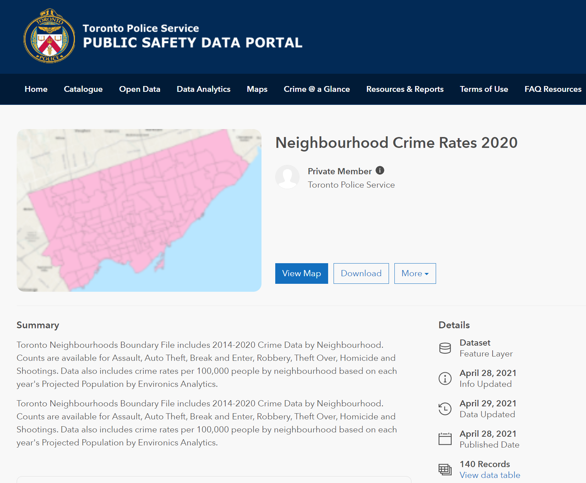
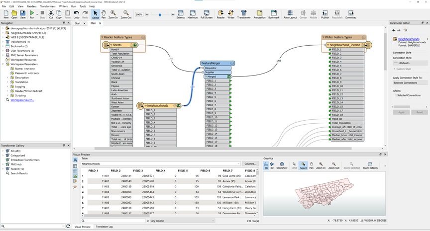
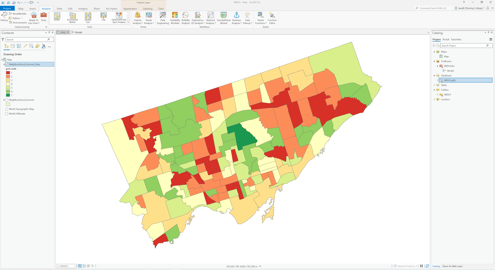
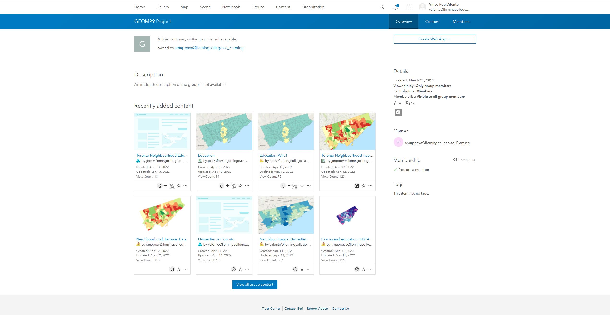
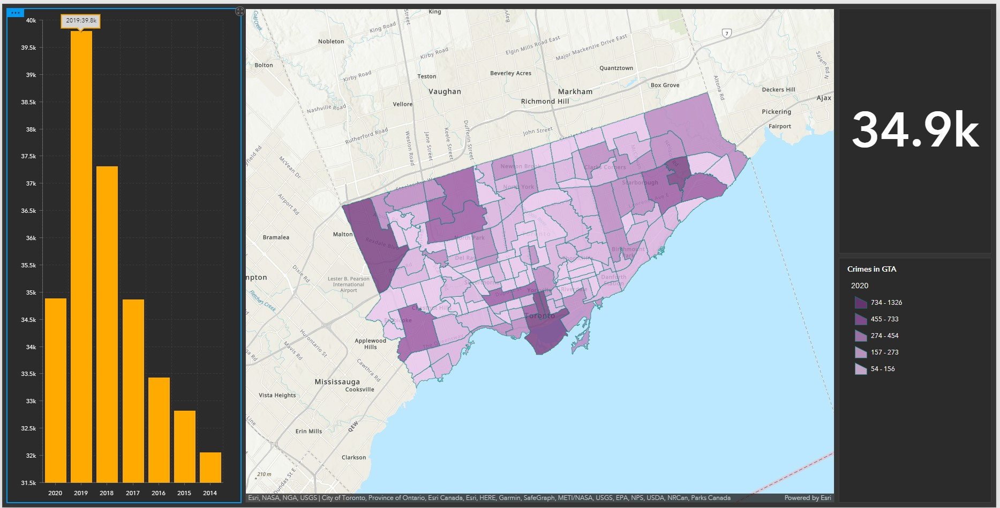

Research on what data to use was centered on Toronto Open source platform. This is where the base geometry of the neighborhoods was obtained as well as the demographic statistics and the education rates, all on a per neighborhood level. The crime rates were found via the Toronto plice service. Each of the datasets needed to join with the base geometry layer (neighborhoods) as a requirement and was part of the research stipulations we set out with.
For strategic purposes the workload was divided by factor. Each person took on an individual factor to analize and move forward with. Education, crime rate, income level, and cost of living, were the four factors and workloads delegated amongst the group. Each person combined their respective source data with the base gemoetry neighborhood data in order to be able to bring it into the mapping environment for further analysis.
Each factor needed to be analized to find out how it can be represented on a map and show the individual factor in a way that is beneficial or negative in influencing where to develop properties. Once this was derived, the weighting system is applied to determine how each factor influences the decision to develop or not. The weighting will be created using the AHP Priority Calculator (reference) and AHP Pairwise Comparison (reference).

For the cartographic representations, each individual factor needed to be represented in a comprehensible manner. The final weighted layer would be the primary focus map and present the user with a thorough understanding of each of the factors and how they influence the decision making process. The user will be able to view all collected information with appropriate background and be able to make a more informed decision about each neighborhood and how attractive it is for development.
Describe the processes you've done in this section
Describe the processes you've done in this section

Describe the processes you've done in this section

Through the use of Experience Builder, it was found that the user interface, though sometimes complicated, does allow for a lot of creative options and expression. One of the major downsides is when modifying the source data on which the 'experience' is built on, the user will more than likely lose all of their work and have to start again. This can be mitigated sometimes through creative editing or appending of new data, but overall, the process is frustrating and through a few attempts at this it looks to be an area where the Experience Builder can be improved upon.